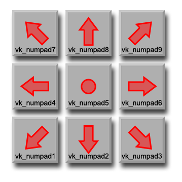

joystick_direction
Returns the direction of movent for the joystick.
Syntax :
joystick_direction(id);
| Argument | Description |
|---|---|
| id | The id of the joystick (1 or 2). |
Returns : vk_numpad1...9
Description
This function will return a virtual key code for the numberpad buttons depending on direction being pressed by the joystick/gamepad with the given id, as shown in the image below. The id can be either
1 or 2 as GameMaker:Studio only accepts input from a maximum of two joysticks/gamepads.
NOTE : This function is only available for Windows.

Example :
switch (joystick_direction(1))
{
case vk_numpad1: direction = 225; break;
case vk_numpad2: direction = 270; break;
case vk_numpad3: direction = 315; break;
case vk_numpad4: direction = 180; break;
case vk_numpad6: direction = 0; break;
case vk_numpad7: direction = 135; break;
case vk_numpad8: direction = 90; break;
case vk_numpad9: direction = 45; break;
}
The above code uses the returned value of the joystick_direction function to set the direction of movement for the instance.